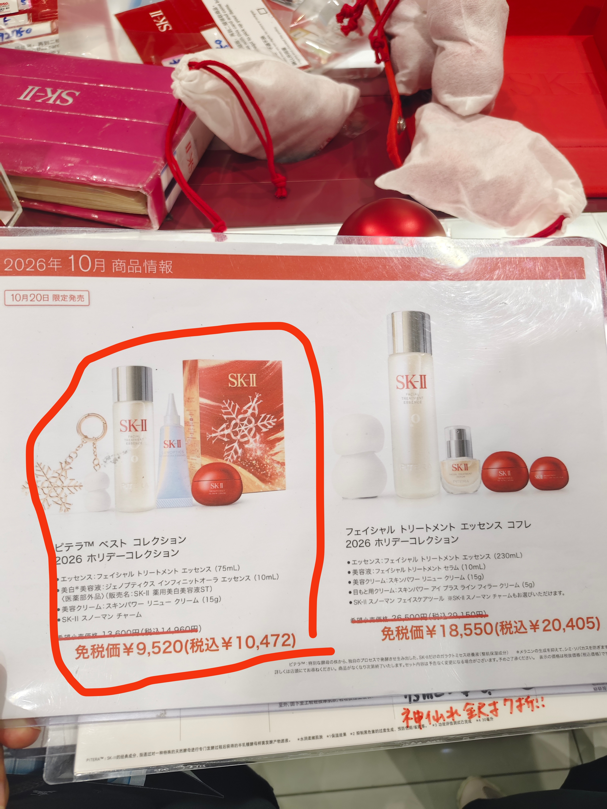

SK-II两套，先看容量和折扣
10月20日限定发售。这两套的区别不只是神仙水大小，搭配的精华也不同。
| 75mL入门套装 | 230mL神仙水套装 | |
|---|---|---|
| 精华 | 小灯泡10mL | Facial Treatment Serum 10mL |
| 面霜 | 15g | 15g，另有眼霜5g |
| 价签原含税价 | ¥14,960 | ¥29,150 |
| 现场含税价 | ¥10,472 | ¥20,405 |
| 现场免税价 | ¥9,520 | ¥18,550 |
采购与预约分开看
按用户的实际采购习惯：国民药妆、伊藤洋华堂SK-II专柜用于日常比价与采购；新款优先向大丸心斋桥、近铁天王寺专柜咨询预约。具体优惠、赠品和额度均需逐店确认。
以上现场价来自用户提供的国民价签，拍摄日期、具体分店未提供，不代表当前报价或全日本统一折扣。用户反馈曾见排队购买，人数、时间及具体购买SKU未确认，不据此量化市场热度。

原始门店记录，非本人护肤测评。参考价与容量以照片为据；230mL款可与官方介绍交叉核对。
SK-II官方介绍 ↗